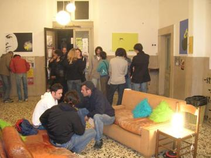
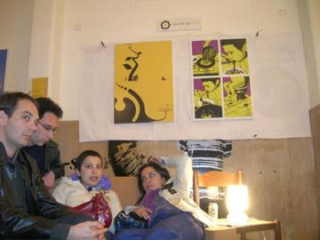
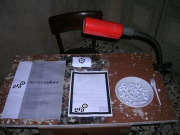
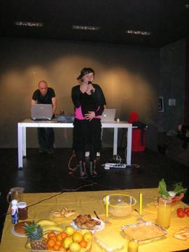
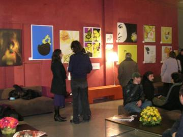

2006 · Principale · Tema/Colore
Tema/Colore 03
Cibo / Giallo
Opere 14


La serata 5 foto










Artisti 14
Chiara TomassiniClaudio AppetitoClio CrescenteDaniele PapaliniElisabetta PalloneFrancesco BarbieriGinevra Virgili · gin°Miriam Tognella · Disorder DesignMklaneRoberta Rizzi · RoRiStefano Longo · thisisstupidValentina TataValerio SpinelliViola Damiani
GRA — Genuine Roman Art · RomaOpere © i rispettivi autori